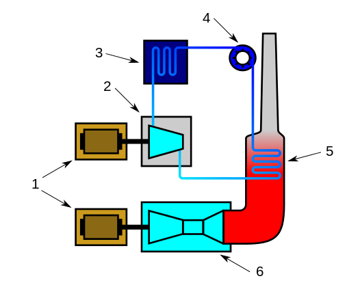
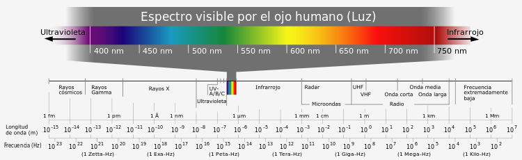
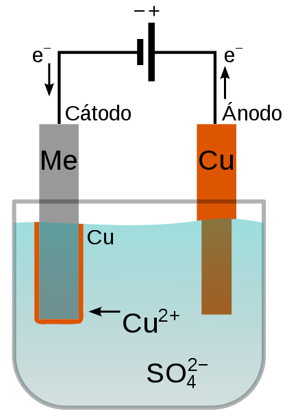
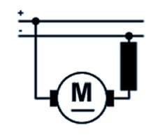
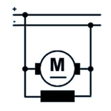
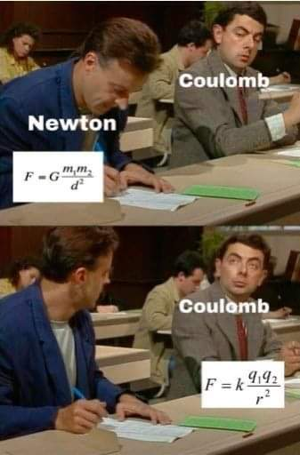

Principios de Electricidad y Magnetismo
Concepto, efectos e importancia de la electricidad.
Año 2000 A.C. Magnesia, Grecia.
- Se descubren las propiedades magnéticas de la magnetita.
Año 600 A.C. Mileto.
- Frotar ámbar con seda o vidrio con lana. Concepto de electro.
Siglo I. China.
- Se inventa la brújula.
Siglo X. España.
Alhazén y Kamal Farisi proponen que los colores visibles son el reflejo de la luz blanca sobre los cuerpos.
- Gran Bretaña.
- William Gilbert realiza un estudio detallado de los fenómenos magnéticos y lo publica como De Magnete.
- Alemania.
- Otto von Guericke construye un generador electrostático con una esfera de azufre y una manivela, generando la carga con la mano.
Siglo XVIII. Italia.
Se conocen dos tipos de electricidad: la atmosférica (descargas de los rayos) y la artificial (mediante frotación).
Máquinas electrostáticas y Botellas de Layden.
Galvani propone un tercer tipo: la electricidad animal, para lo cual utilizaba patas de rana y generadores electrostáticos.
Uso del sistema patas-cable como detector de electricidad atmosférica.
Volta y el electróforo, construido por influencia de tejidos diferentes de peces que generan electricidad: la pila.
La ausencia de imanes con polos aislados impide relacionar el magnetismo con la electricidad.
Siglo XVIII. Francia.
- Charles Coulomb idea una manera matemática de expresar la fuerza magnética.
Siglo XIX. Estados Unidos.
- Benjamin Franklin inventa el pararrayos y un detector de tormentas.
Siglo XIX. Dinamarca.
- Christian Örsted observa la perturbación de una brújula al acercarle un circuito eléctrico.
Siglo XIX. Gran Bretaña y Estados Unidos.
- Michael Faraday y Joseph Henry, generan corriente eléctrica acercando un imán a un circuito eléctrico. Faraday crea el prototipo de motor eléctrico.
- Morse demuestra que la electricidad puede ser utilizada en las comunicaciones a distancia.
- Estados Unidos.
- Thomas Davenport construye el primer motor eléctrico útil.
- Gran Bretaña.
- James Maxwell propone la teoría del Electromagnetismo, sintetizada en cuatro ecuaciones.
- Theodore Maiman obtiene el láser mediante un rubí, un par de espejos y una lámpara flash.
La Electricidad
Se comprende por electricidad básicamente al flujo de electrones desde un punto A a un punto B, a través de un material conductor. Sin embargo, podemos englobarla como un conjunto de fenómenos físicos vinculados precisamente con la transmisión de cargas eléctricas. Podemos encontrar a la electricidad en formas muy diversas, tales como:
Carga eléctrica. Los átomos y las moléculas pueden cargarse electromagnéticamente (+ o -), influyendo en la forma en la que se atraen y repelen mutuamente, afectando la configuración de sus estructuras.
Corriente eléctrica. Las partículas cargadas eléctricamente pueden fluir por un material conductor.
Campos eléctricos. Las cargas eléctricas producen un campo a su alrededor aunque no estén en movimiento, influyendo en las partículas que se encuentran dentro de él.
Potencial eléctrico. Los campos eléctricos pueden realizar distintos trabajos, medidos en voltios, lo cual se denomina potencial eléctrico.
Magnetismo. Las cargas eléctricas en movimiento generan campos magnéticos atrayendo o repeliendo a los materiales magnéticos que se encuentran dentro de él y eventualmente volver a generar corriente eléctrica.
Generación de la electricidad
La manera más común de generar electricidad es mediante la conversión de energía primaria en mecánica, la cual se utiliza para mover generadores que conviertan a esta última en electricidad.
Centrales eléctricas
- Central de carbón, gasóleo, biomasa y gas natural. Se quema algún combustible fósil, lo cual genera calor por medio de calderas. El ciclo comienza con agua líquida que se encuentra en un condensador y es llevada por una bomba que aumenta su presión pero sin pérdidas de temperatura (es un paso isoentrópico), igualando a la presión de la caldera. El calor convierte al agua en vapor de manera isobárica. El vapor a alta presión pasa a través de una turbina, en la cual aumenta su energía cinética debido a la aceleración causada por los álabes giratorios. A cambio, la presión y la temperatura bajan pero sin intercambio de calor. Esto obliga a la turbina a ser construida con un aumento de su diámetro cerca de la salida del vapor y a contar con conexiones a la caldera para recalentar el vapor, el cual vuelve a otra sección de la turbina. Enseguida, el vapor ya frío se manda al condensador a presión constante.
En el caso del gas natural o combustibles pulverizados, primero se hace entrar aire a la turbina a presión y temperatura ambiente. El aire es comprimido mediante paletas giratorias (rotor) contra otras fijas (estator), siendo esta compresión tan rápida que se considera adiabática. En este momento el aire ha elevado su presión y temperatura. Se inyecta el gas o el combustible en la cámara de combustión y se quema. Esto aumenta aún más la temperatura y la energía cinética de las particulas de gas a presión constante, es decir, es un proceso isobárico. El aire, al expandirse también de manera adiabática, transmite movimiento al generador mediante el mismo eje unido a las paletas de la turbina. Al final, el aire sale de la turbina a presión constante, cediendo su calor al aire atmosférico y bajando su temperatura a la ambiental. Esto es conocido como el Ciclo Brayton, es decir, compresión adiabática - expansión isobárica - expansión adiabática - compresión isobárica.
- Central de ciclo combinado. Este es una mejora del anterior, solo que cuenta con un ciclo Brayton y la inclusión del Ciclo Rankine para contar con dos circuitos solidarios.
 1. Generadores eléctricos
Turbinas de vapor
Condensador
Bomba impulsora
Intercambiador de calor
Turbina de gas
- Central nuclear. Aprovecha la energía térmica liberada tras la fisión nuclear. Se utiliza uranio y plutonio debido a que son átomos muy pesados y con una gran cantidad de neutrones en sus núcleos. Lo anterior los desbalancea en cuanto a cargas: son demasiado positivos y por ende, inestables. En esta situación, basta con chocar con un único neutrón para desestabilizarse y romper los enlaces de fuerzas. El átomo al romperse se transforma en energía, materia y dos o tres neutrones. Por ejemplo, el uranio-235 al romperse por fisión se transforma en 200 MeV = 77 TJ/kg; en cesio-140 y rubidio-92, más dos neutrones. Estos últimos son necesarios para continuar la reacción en cadena. La masa que resulta del proceso es menor a la original, siendo transformada en energía según la famosa ecuación de Einstein:
\[ E=mc^2 \]
Centrales hidroeléctricas
Las turbinas son accionadas por la caída del agua o el movimiento de fuertes corrientes de la misma. Requieren el uso de represas de altura.
Parques eólicos
La fuerza del viento es la que genera el movimiento necesario para mover los ejes de los generadores.
Celdas solares
Transforman la radiación solar mediante reacciones químicas en los paneles en energía eléctrica. Otro principio involucra la conversión de fotones en flujo de electrones.
Plantas geotérmicas
Aprovechan el calor del planeta.
Maremotrices
Utilizan la fuerza de las mareas.
Undimotrices
Aprovechan el oleaje del mar.
Pilas y baterías
Las pilas son fuentes primarias de electricidad, es decir, generan la corriente eléctrica. Por contra, cuando pierden sus propiedades, no es posible revertir el proceso. En cambio, las baterías requieren ser cargadas mediante una fuente primaria, lo que las vuelve fuentes secundarias. Pueden recargarse, siendo reversible el proceso.
Pilas de combustible
Efectos de la electricidad
La energía eléctrica se aprovecha de diversas maneras. Es capaz de transmitir datos y de generar:
Luz
El flujo eléctrico en el vacío y pasando a través de ciertos materiales causa lo que se conoce como incandescencia, fenómeno aprovechado en las bombillas y focos. Se explica porque al pasar por el filamento de un foco, los electrones generan ondas electromagnéticas visibles (o partículas conocidas como fotones), comprendidas en un rango entre 400 y 700nm, es decir, una franja muy pequeña.

Calor
El paso de los electrones a través de un conductor genera energía calórica, lo cual es conocido como el efecto Joule. Este es aprovechado por resistencias para calentar, cocinar e incluso soldar materiales. La energía térmica o calorífica puede calcularse mediante la ecuación:
\[ Q=0.24RI^2t\\ o \\ Q=PtJ \]
Donde:
\(Q=\) Calor medido en calorías
\(P=\) Potencia
\(t=\) tiempo
\(J=\) Joules
\(R=\) Resistencia en ohms
\(I=\) Intensidad de corriente
Efectos químicos
Cuando se hacen circular los electrones por diferentes fluidos, el comportamiento de los electrones con el compuesto químico de estos fluidos altera los mismos dando como resultado cambios químicos de diferentes sustancias. Un buen ejemplo es el proceso de galvanizado, el cual es el proceso electroquímico con el que se puede cubrir un metal con otro. Se denomina de esta manera gracias a Luigi Galvani, quien descubrió en sus experimentos que si se pone en contacto un metal con una pata cercenada de una rana, ésta se contrae como si estuviese viva; dándose cuenta que tiene una carga eléctrica diferente.
Galvani descubrió que puede recubrirse un metal con otro, siempre depositando un metal de carga mayor sobre otro de carga menor, y aprovechando esta cualidad de su descubrimiento se desarrolló más tarde el galvanizado, la galvanotecnia, y luego la galvanoplastia.

Magnético
La electricidad permite obtener magnetismo o efecto magnético, gracias a la capacidad que tienen los electrones de generar campos magnéticos cuando están en movimiento. Esta capacidad permite entonces obtener un campo magnético mayor en relación al número de espiras de una bobina, fabricando un electroimán.
Movimiento
Utilizando la capacidad de atracción y repulsión de los materiales magnéticos podemos obtener movimiento, con una fuerza o potencia capaz de mover un objeto y obtener una fuerza o trabajo mecánico. Por ejemplo los motores eléctricos están formados por bobinados de cobre, los cuales al hacer circular una corriente eléctrica generan campos magnéticos, y debido a la capacidad de repulsión de los campos magnéticos del mismo signo incitan al movimiento del eje del motor.
Podemos dividir los motores en dos tipos, dependiendo de la corriente con la que trabajen: corriente alterna y directa:
Alterna
Motor síncrono (el rotor gira a la misma velocidad que el campo magnético del estator) y asíncrono (caso contrario).
Directa
Motor serie (inducido y devanado inductor conectados en serie)

Motor compound (dos inductores, uno conectado en serie con el inducido y otro en paralelo con el circuito anterior)

Motor Shunt (el inductor está conectado en pparalelo)

Motores sin escobillas (no cuentan con las escobillas o anillos rozantes que permiten el cambio de polaridad, dejando esto a circuitos de control digitales)
Motor paso a paso (mediante impulsos eléctricos gira solo una determinada cantidad de grados)
Servomotor (es un motor paso a paso optimizado, con mayor control de la posición)
Motor sin núcleo (no cuenta con rotor de hierro, por contra cuenta con un rotor plano, en forma de disco, muy útil porque no presenta una inercia considerable)
Ley de Coulomb

Métodos de producción de energía eléctrica.
Práctica 1. Batería casera.
Material:
Limones.
Tornillos o clavos galvanizados, uno por cada limón.
Trozos o monedas de cobre, uno por cada limón.
Cables tipo caimán, mínimo 5.
Un LED.